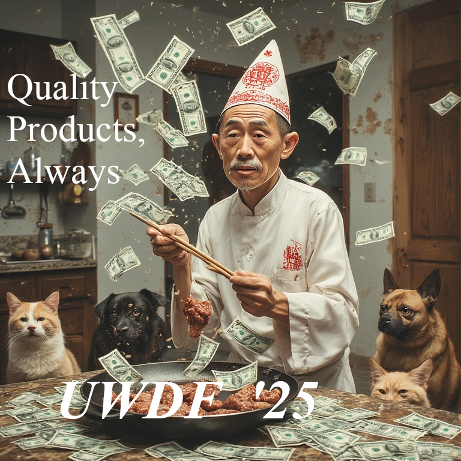

UWDF traces its earliest lineage to a figure active in the mid-seventeenth century, during the consolidation period of the Qing dynasty in present-day Guangzhou, near Hong Kong. Wong Shifu, meaning Master Wong, was a textile broker operating along emerging commercial corridors that granted agrarian districts with the ability to sell professionally made food. His practice showed pragmatic willingness to integrate artisanal knowledge with evolving market demands, being the first to adapt to emerging technology. Over time, his dynastic company became a leading teacher of farm-to-table mechanics in China.
The subsequent generation kept his vision intact, and expanded on his company. As political and economic conditions shifted, the descendants diversified into materials sale. Continuity rested less on hereditary authority and more on the codified operating discipline derived from the original merchant’s frameworks. This provided institutional memory that could scale beyond local markets.


The leaders of the organization re-organized it into a more modern form that one would see today. Their view of foreign trade, however, conflicted with the Emperor's, and the company sided with the British in the Opium Wars. The resulting damage in the aftermath meant they were all done away with, except for one: Wong Zhi Mo. He shrunk the company, ushering in the modern era.

Rebuilding the company was difficult with strictly Communist China and the World Wars. By siding with the Japanese, the company was again nearly destroyed. Wong Peng, the great-great grandson of Wong Zhi Mo, finally, after the hyper-restraining Communism of China was reformed, could build back.


We have picked up where the Wong family left off, and, with their ongoing support and collaboration, begun rebuilding to what once was.